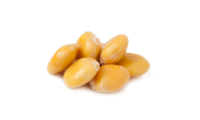

ルピナス
2023.6.1 (SUN)
花言葉は、"想像力"、"いつも幸せ"。
古代ヨーロッパで、ルピナスは食用花として栽培されていました。花を食べると想像力が高まると信じられていました。
藤の花を逆さにしたように見えることから、ノボリフジとも呼ばれています。
耐寒性の多年草ですので、東北北部の気候に向いています。移植を嫌いますので、お庭に直播きするのがおすすめです♪
ルピナス豆は、塩ゆでにするとビールのおつまみに！大豆のようなクセのない味なんですよ♪
ルピナスの種を入荷しましたので、ぜひお買い求め下さい✨
植える時期は、涼しくなった9月頃がおすすめです。